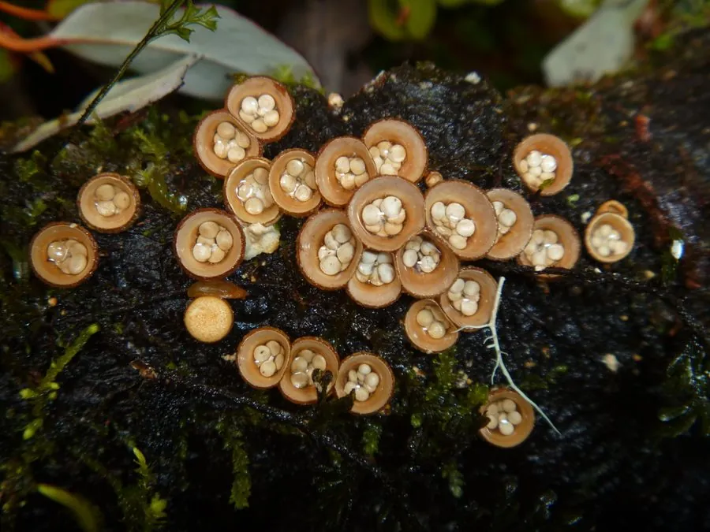

真菌 · 真菌界
白蛋巢菌 Crucibulum laeve

白蛋巢菌的杯状子实体像一只小鸟巢，里面装着几颗白色“小蛋”，常成群生于枯枝和木屑上，靠雨滴弹射孢子，不可食用。
- 分类
- 门担子菌门纲伞菌纲目伞菌目科鸟巢菌科属白蛋巢菌属
- 栖息环境
- 枯枝、木屑、腐木与富含有机质的土壤，常成群生长
- 地理分布
- 温带地区广泛分布，中国各地林地、花园与堆肥处常见
- 保护级别
- 暂无评估（IUCN 未评估，中国未列入重点保护名录）
物种志
白蛋巢菌是担子菌门鸟巢菌科的真菌，子实体呈杯状或圆柱状，高 0.5–1 cm，直径 0.5–0.8 cm，外表面黄褐色至淡黄褐色，有细绒毛，内表面光滑、呈灰白色至淡黄色。杯内底部生有数枚扁圆形的包被小体，初为白色至淡黄色，成熟后仍保持浅色，形似鸟巢里的白色小蛋，因此得名“白蛋巢菌”。
白蛋巢菌生于枯枝、木屑、腐木和富含有机质的土壤上，常成群出现，在温带地区分布广泛，中国各地林地和花园中都能见到。它靠分解枯枝和木质残体生活，是森林和城市绿地中的分解者。包被小体由菌丝索固定在杯底，雨滴落入杯中时会把它们弹出，借雨水飞溅传播孢子，这种传播方式在鸟巢菌中十分典型。白蛋巢菌不可食用，但形态小巧有趣，是观察真菌繁殖方式的好材料。
形态与习性
- 子实体杯状，高 0.5–1 cm
- 外表面黄褐色，有细绒毛
- 包被小体数枚，白色至淡黄，形似鸟蛋
- 传播雨滴落入杯中把“小蛋”弹出
- 食用性不可食用
- 生境枯枝、木屑与腐木
- 习性腐生，分解枯枝和木质残体
趣味知识
- 白蛋巢菌的杯状子实体里装着几颗白色“小蛋”，像极了鸟巢。
- 这些“小蛋”是包被小体，雨滴打落时会被弹出传播孢子。
- 它常成群长在枯枝和木屑上，是花园里常见的小型真菌。
- 白蛋巢菌不可食用，但小巧的形态很适合自然观察。